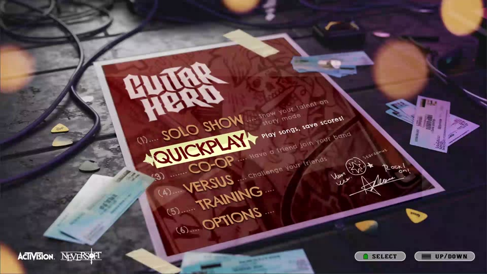
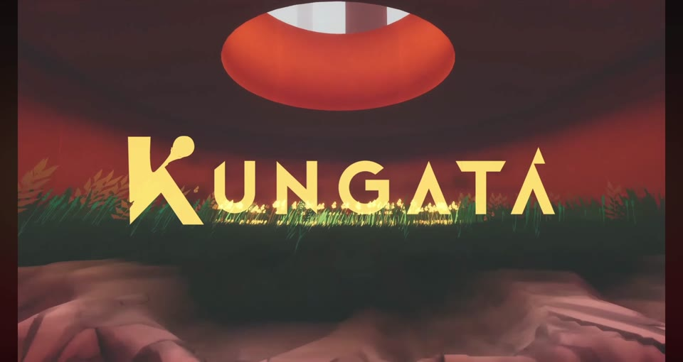
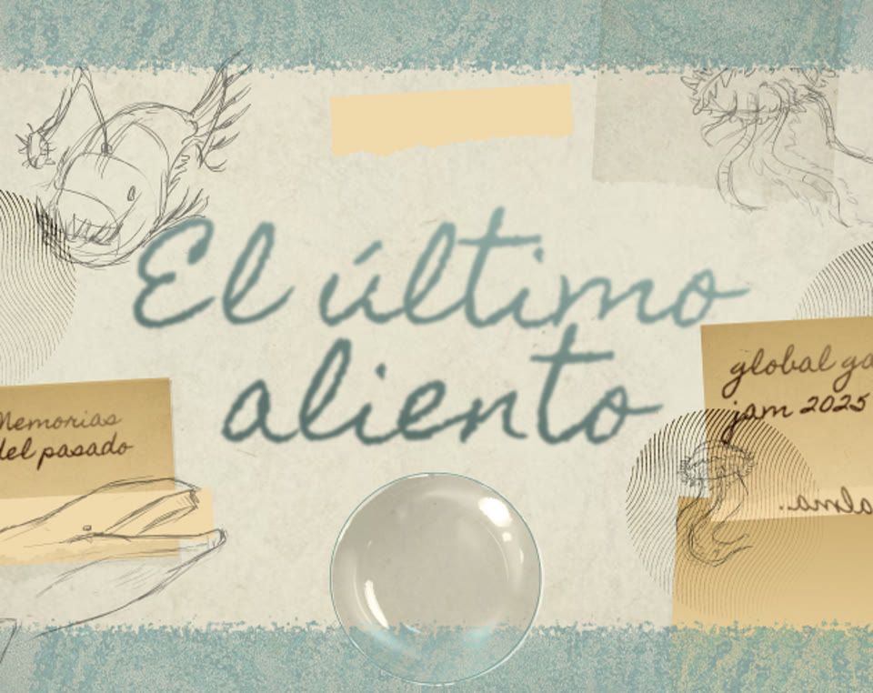
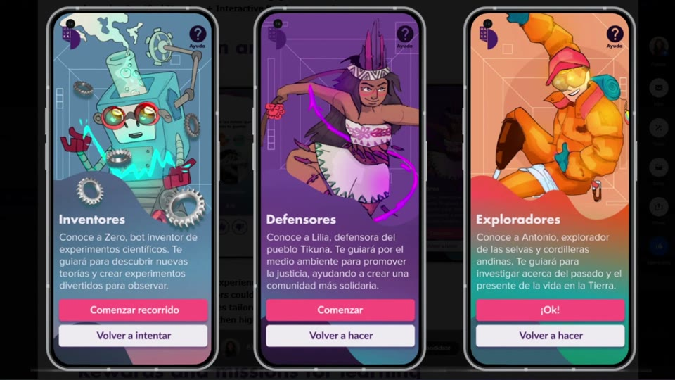
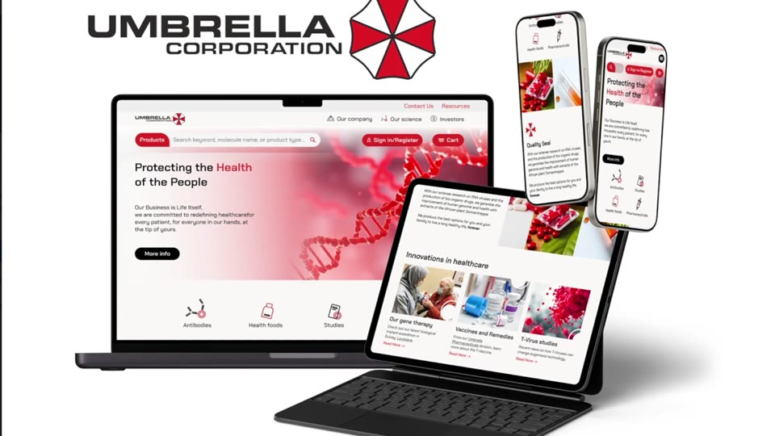
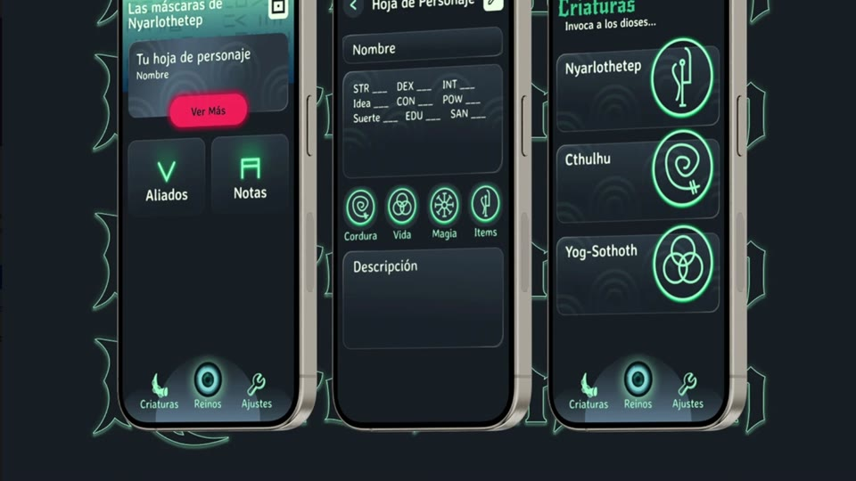

UI/UX Technical Designer
Interface systems for complex interactive experiences.
I design game and product interfaces — HUDs, menus, ability feedback, decision flows — and I build them, not just specify them.
I come from games QA, which is where I learned what actually breaks a player's experience. That's the criterion I design with now.
Work
Selected projects
Every card states the scope of my contribution up front — design, implementation or visual work are different skills, and conflating them helps nobody.
Guitar Hero III — UI Redesign
A full interface system rebuilt around one question: how do you modernise navigation without losing the rock identity that made the game iconic?

HoverKungatá
Enemy AI, UI, dialogue system and object interaction, implemented in Unity. Evidence that I can build the systems I design, not only hand them off.

HoverEl último aliento
Interface and narrative writing for a game jam entry, built under a 48-hour constraint. Illustration by a teammate.

HoverBeat the Evil
In development. An Unreal Engine piece focused on UMG and Common UI — ability HUD, state feedback and menu architecture, designed and implemented end to end.
Universo Maloka
Visual identity and illustration for a gamified museum app. Research was conducted by the team; my contribution was UI art and illustration.

HoverUmbrella Corp — Responsive Site
A responsive corporate site as a conceptual exercise: how a fictional brand's tone survives across breakpoints. Functional prototype in Figma.

HoverNecronomicón — TTRPG Companion App
A companion app for tabletop role-playing: character sheets, dice and session tracking, designed around what players actually reach for mid-game.

HoverAbout
From breaking interfaces to building them
[Two or three paragraphs, first person. Not a CV — a narrative. Where you come from, what pulled you toward interface design, where you're headed. Name the specific games and products that shaped your taste; that says more about your judgement than any tool list.]
[Second paragraph: what you're building now, and the kind of role you're looking for.]
What a designer who came from QA brings
- Edge cases surface at design time, not in the patch cycle — the state nobody specified, the flow that strands the user, the feedback that fires twice.
- Specifications that can actually be verified. A design nobody can test is a design nobody can validate.
- Severity judgement learned in production — what genuinely blocks a user versus what merely annoys them.
- Fluency across disciplines. QA talks to design, engineering and production every single day.
Technical capability
[Short paragraph: what you can implement yourself and what you hand off. Be precise — overstating here is the fastest way to lose credibility in a technical interview.]
- FocusUI/UX Technical Design
- Primary engineUnreal Engine — UMG
- AlsoUnity · C#
- DesignFigma
- Based inColombia
- LanguagesSpanish · English